- Módulo: Sistemas Operativos
- Título del trabajo Servidor de impresión: Instalación en Windows.
- Componentes del grupo: David Rodríguez Herrera
- Curso Académico: 2013/2014
- Fecha de entrega: 27 de Enero de 2014
Vamos a realizar una pequeña prueba en el mismo servidor para comprobar que funciona correctamente PDFCreator:
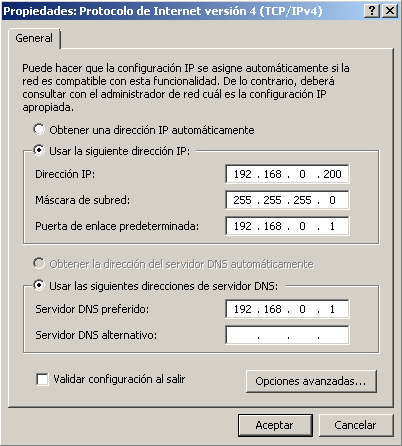 En primer lugar establecemos una IP estática.
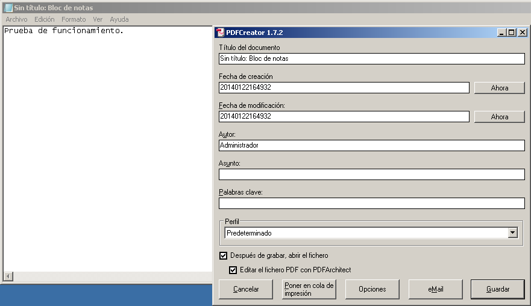 Prueba de impresión. Como vemos PDFCreator se ha instalado correctamente. Dada que la instalación es muy sencilla no se explicará en esta práctica. Basta con elegir instalación estándar y seguir el asistente (siguiente, siguiente...).
Una vez realizada esta primera prueba comenzaremos con la instalación del rol 'Servicios de impresión y documentos':
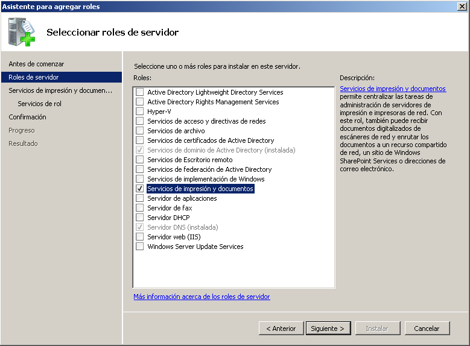 Seleccionamos 'Servicios de impresión y documentos'.
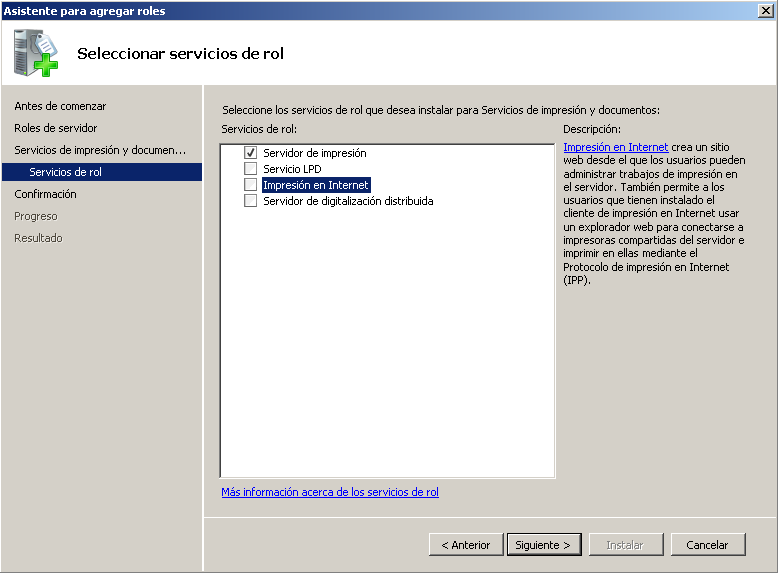 Seleccionamos 'Servidor de impresión' e 'Impresión en Internet'.
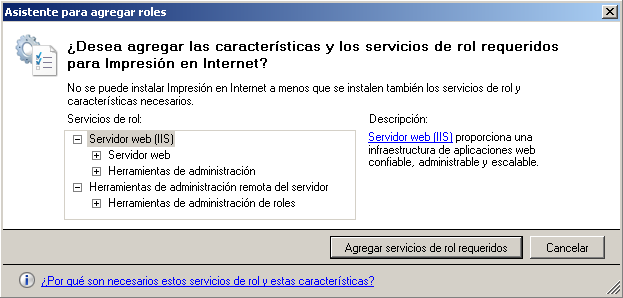 Como hemos seleccionado 'Impresión en Internet' nos pide instalar las siguientes características. Aceptamos.
Una vez instalado el rol en el explorador de Windows escribimos el nombre de nuestro equipo o la IP junto con "\\" como muestra la imagen. Ejemplo: \\172.16.109.200
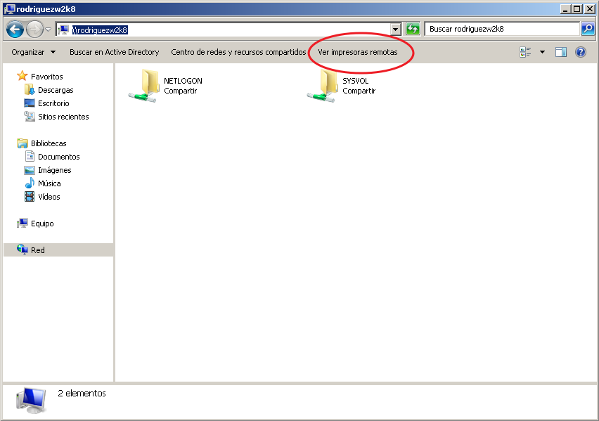 Clicamos sobre 'Ver impresoras remotas'.
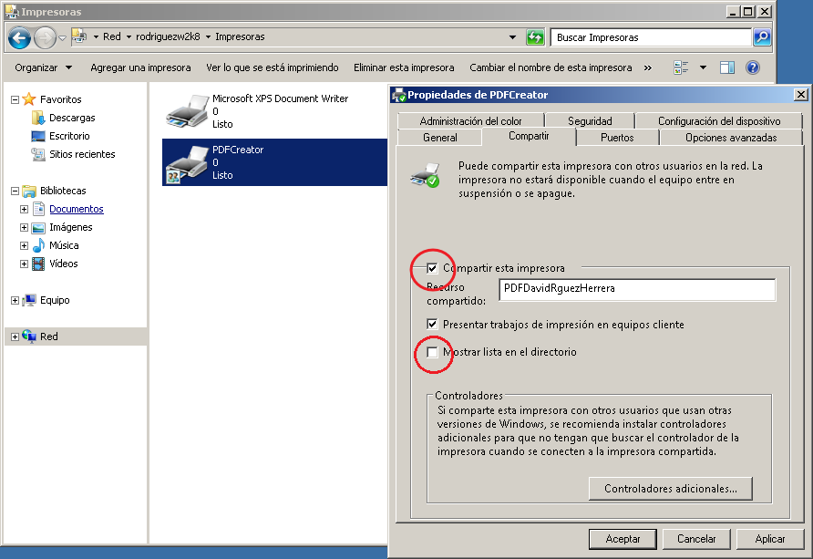 Clic derecho sobre PDFCreator, propiedades y seleccionamos 'Compartir esta impresora' y 'Mostrar lista en el directorio' para que nos aparezca más adelante al buscarla.
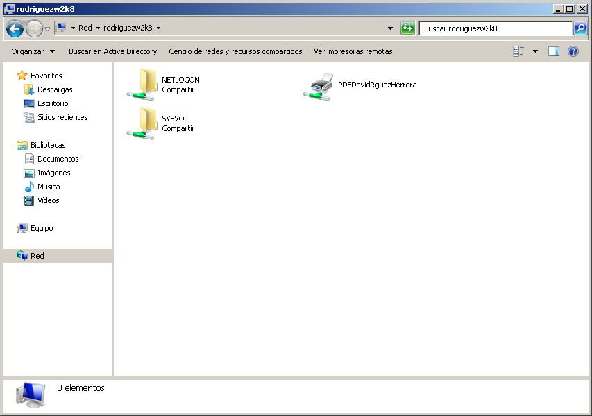 Vemos que se ha compartido correctamente.
Ahora comentamos por encima la creación del dominio y la unión a este pues ya se ha explicado en prácticas anteriores.
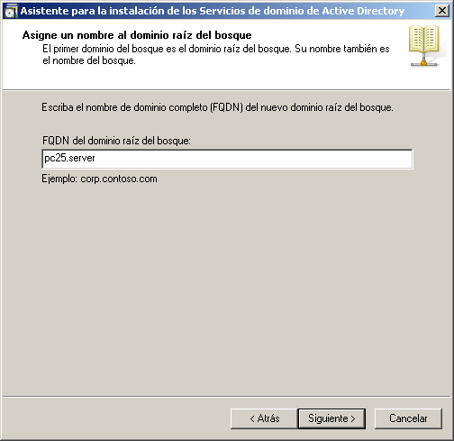 Instalamos dcpromo y le damos un nombre al dominio.
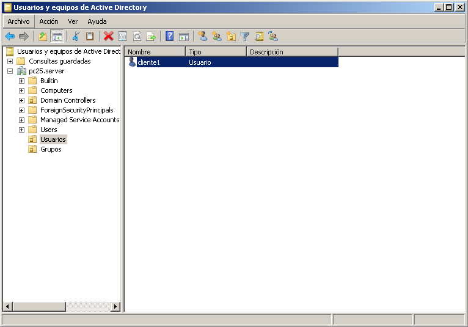 Creamos el cliente en el dominio.
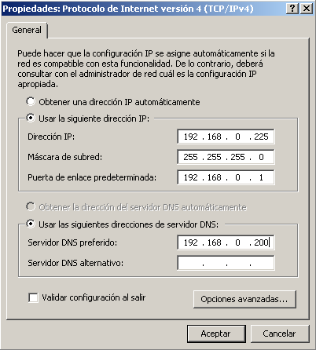 Ahora desde el cliente establecemos la IP estática y en DNS apuntamos al servidor para poder unirnos a el.
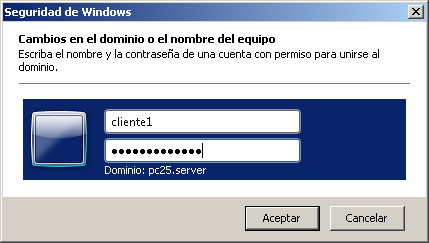 Nos unimos al dominio.
Ahora accederemos a la impresora a través del navegador desde el cliente:
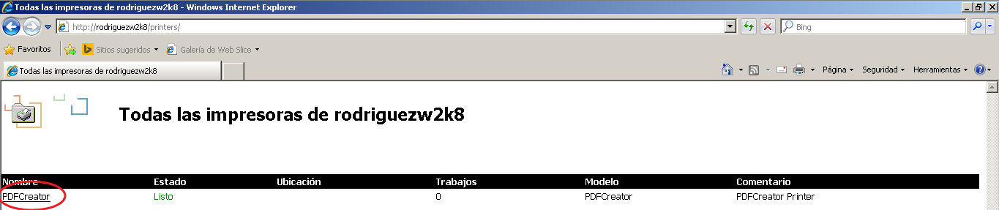 Accedemos a la impresora escribiendo en el navegador http://ip del servidor o nombre/printers/. Vemos nuestra impresora. Clicamos sobre ella.
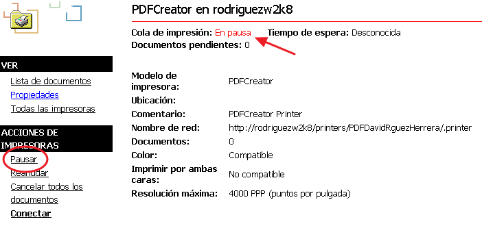 Pausamos las impresiones.
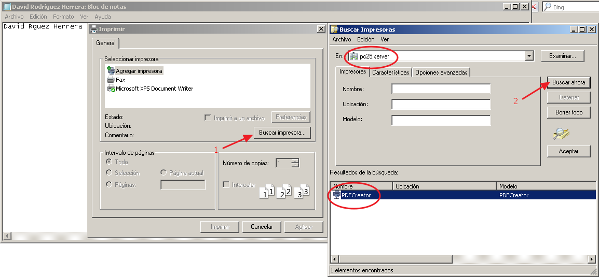 Ahora creamos un texto de prueba, le damos a imprimir, 'Buscar impresora...', seleccionamos el servidor y 'Buscar ahora'. Aparecerá nuestra impresora como vemos en la imagen.
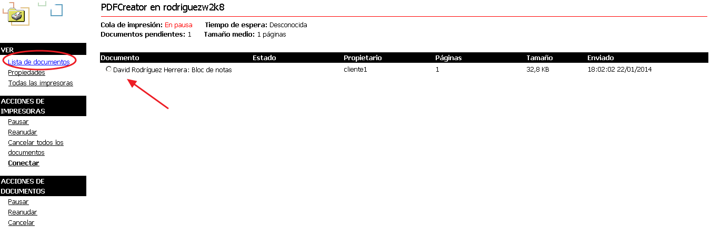 Vemos que se ha realizado correctamente toda la instalación y configuración pues aparece el documento en pausa que queremos imprimir.